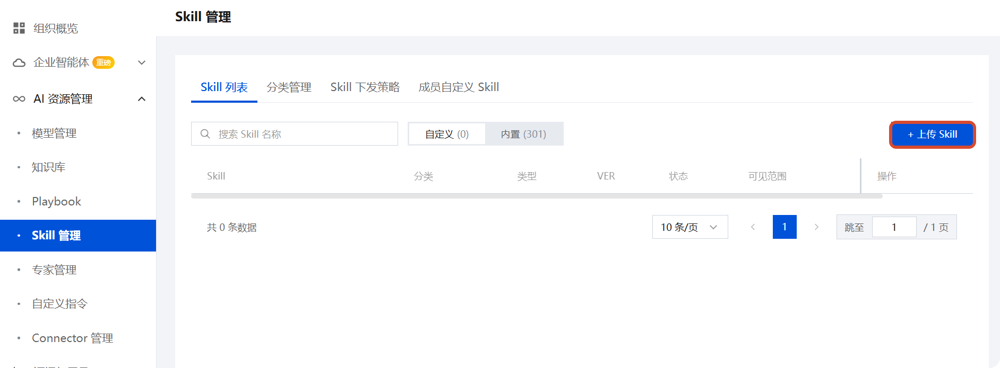
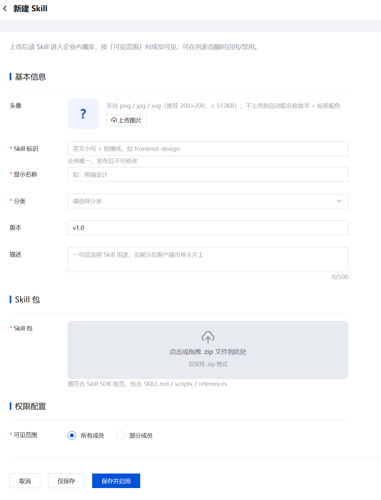
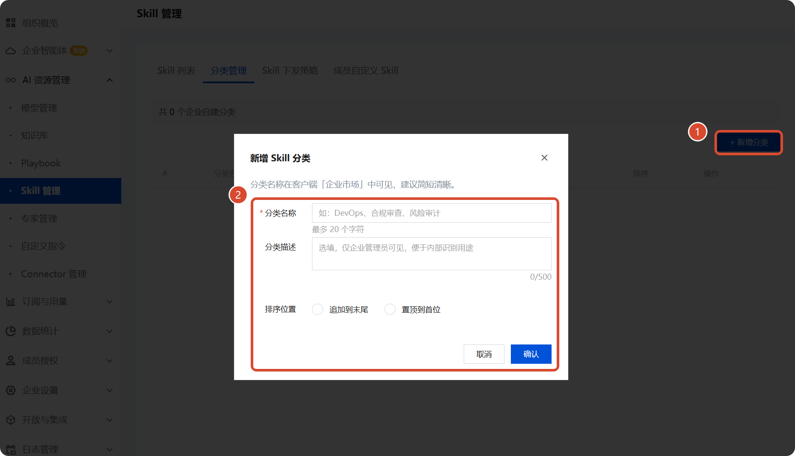
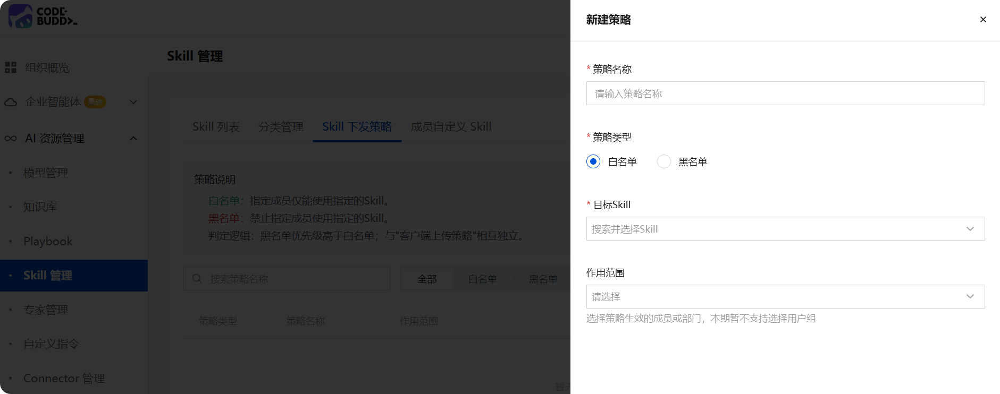
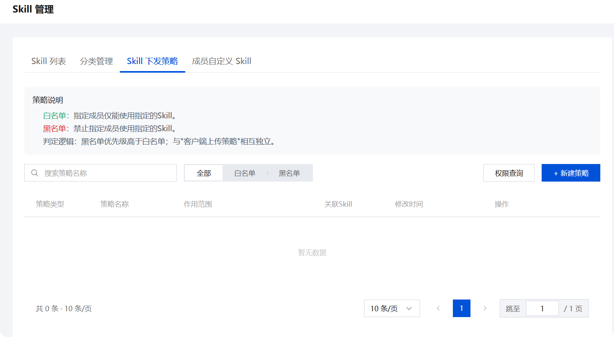
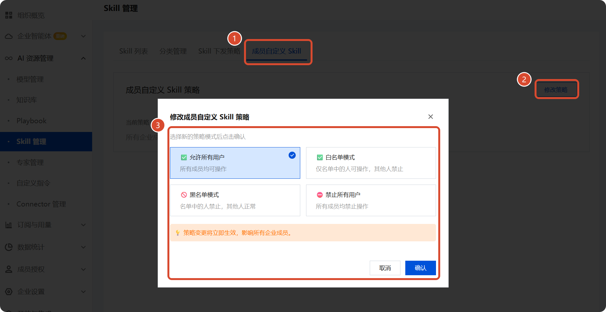

Skill 管理
使用企业 Skill 管理功能统一分发和管理组织内的 CodeBuddy/WorkBuddy 能力扩展，实现标准化的技能共享与精细化权限控制。
概述
什么是 Skill
Skill（技能） 是可复用的 CodeBuddy/WorkBuddy 能力扩展单元，封装了特定领域的指令、工具和知识，使智能体能够执行专业化的任务。
| 特征 | 说明 |
|---|---|
| 可发现性 | 成员可在客户端按分类浏览和使用已授权的 Skill |
| 可管控性 | 管理员可控制每个 Skill 的可见范围和使用权限 |
| 可扩展性 | 支持企业统一下发和成员自定义两种来源 |
关键区分
- 内置 Skill：系统预置的能力（当前 301 个），无需管理员操作即可供成员使用
- 自定义 Skill：企业管理员或成员上传的组织专属能力，需通过审核和策略配置后生效
核心概念
策略体系
企业 Skill 管理采用双层策略架构：
| 策略维度 | 控制对象 | 典型场景 |
|---|---|---|
| Skill下发策略 | 成员「能使用哪些 Skill」 | 仅允许研发团队使用代码审查 Skill |
| 成员自定义Skill | 成员「能否自行上传 Skill」 | 开放/限制成员创建个人 Skill 的权限 |
优先级规则
- 黑名单 > 白名单 > 默认允许
- "下发策略"与"客户端上传策略"相互独立
快速开始
第一步：上传企业 Skill
- 进入 AI 资源管理 - Skill 管理 - Skill 列表
- 点击右上角 + 上传 Skill 按钮

- 填写 Skill 基本信息，点击或拖拽上传本地 Skill 包文件（支持
.zip格式）- Skill 标识（必填）：用于显示的唯一标识
- 显示名称（必填）：客户端显示的名称
- 分类（必填）：选择或新建归属分类
- 版本（选填）：Skill 版本号
- 描述（选填）：Skill 的简要说明

- 确认权限配置-可见范围后，点击保存并启用完成上传
第二步：配置分类
- 切换到 分类管理 标签页
- 点击 + 新增分类 创建业务分类
- 设置以下属性：
| 字段 | 说明 | 示例 |
|---|---|---|
| 分类名称 | 客户端显示的类别名 | "代码审查"、"数据分析" |
| 分类描述 | 辅助理解的文字说明 | "用于自动化代码质量检测" |
| 排序位置 | 决定客户端展示顺序 | 可设置追加到末尾或置顶到首位 |

第三步：设置下发策略
如果需要限制特定 Skill 的使用范围：
- 进入 Skill 下发策略 标签页
- 点击 + 新建策略
- 选择策略类型并配置：
- 策略名称：自定义策略名称
- 策略类型：可选择白名单或黑名单
- 目标Skill：搜索并选择需要限制的Skill
- 作用范围：选择策略生效的成员或部门
- 保存后策略即时生效

Skill 列表
页面功能概览
Skill 列表是管理的核心入口，提供 Skill 的全生命周期操作。
| 功能区 | 说明 |
|---|---|
| 搜索框 | 按 Skill 名称模糊搜索 |
| 来源筛选 | 切换查看「自定义」或「内置」Skill |
| 批量操作 | 支持多选进行状态变更 |
数据列定义
| 列名 | 类型 | 说明 |
|---|---|---|
| Skill | 文本 | Skill 显示名称，点击可查看详情 |
| 分类 | 文本 | 归属的分类名称 |
| 类型 | 枚举 | 内置 / 自定义 |
| VER | 版本号 | 当前发布版本，如 v1.2.0 |
| 状态 | 枚举 | 已启用 / 已停用 |
| 可见范围 | 文本 | 当前 Skill 的可见成员/部门范围 |
| 操作 | 按钮 | 编辑 / 停用 / 删除 / 查看权限 |
上传 Skill 规范
支持的 Skill 包结构：
my-enterprise-skill/
├── SKILL.md # [必填] 名称 + 描述 + 使用说明
├── manifest.yaml # [必填] 版本、依赖、元数据
├── scripts/ # [可选] 可执行脚本
├── references/ # [可选] 参考文档
└── assets/ # [可选] 图标、模板等资源manifest.yaml 最小示例：
yaml
name: my-enterprise-skill
version: 1.0.0
description: "企业内部专用的数据处理 Skill"
category: data-processing
author: enterprise-admin分类管理
为什么需要分类
分类管理解决两个核心问题：
| 问题 | 解决方案 |
|---|---|
| Skill 过多导致查找困难 | 按业务领域分组，客户端以树形结构呈现 |
| 不同部门关注点不同 | 可按部门需求定制可见分类 |
操作指引
创建新分类
- 在 分类管理 标签页点击 + 新增分类
- 填写表单：
| 字段 | 必填 | 约束 | 说明 |
|---|---|---|---|
| 分类名称 | ✅ | 2-20 个字符 | 客户端显示名称 |
| 分类描述 | ❌ | 最大 500 字符 | 补充说明信息 |
| 排序 | ❌ | 追加到末尾 / 置顶到首位 | 同级排序依据 |
- 点击保存
管理现有分类
对已有分类支持的操作：
| 操作 | 触发方式 | 影响 |
|---|---|---|
| 编辑 | 行末「编辑」按钮 | 修改名称/描述/排序 |
| 删除 | 行末「删除」按钮 | 分类下 Skill 变为未分类状态 |
| 查看关联 | 行末「关联」数字 | 跳转至该分类下的 Skill 列表 |
说明
删除分类不会删除 Skill，仅解除关联关系。
Skill 下发策略
策略类型详解
系统提供三种策略模式：
白名单策略
定义：指定成员仅能使用列表中的 Skill
适用场景：
- 新员工入职，仅开放基础能力
- 外包人员访问受限 Skill 集
- 合规要求限定可用工具范围
黑名单策略
定义：禁止指定成员使用列表中的 Skill
适用场景：
- 高风险 Skill 需要限制访问
- 敏感操作仅限核心人员
- 试用期限制高级功能
策略管理操作
| 操作 | 说明 |
|---|---|
| 新建策略 | 点击「+ 新建策略」，选择类型后填写表单 |
| 权限查询 | 输入成员名称，查询其被哪些策略覆盖及最终生效结果 |
| 编辑/删除 | 对已有策略进行调整或移除 |
策略属性一览
| 属性 | 类型 | 说明 |
|---|---|---|
| 策略类型 | 枚举 | 全部 / 白名单 / 黑名单 |
| 策略名称 | 文字 | 管理标识，便于检索 |
| 作用范围 | 复合 | 支持指定成员/部门/角色 |
| 关联 Skill | 列表 | 策略涉及的 Skill 集合 |
| 修改时间 | 时间戳 | 最近一次更新时间 |

成员自定义 Skill
功能说明
控制企业成员是否可以自行上传并使用个人 Skill。
策略选项
| 选项 | 效果 |
|---|---|
| 允许所有用户 | 所有成员均可上传个人 Skill |
| 白名单模式 | 仅名单中的人可操作，其他人禁止 |
| 黑名单模式 | 名单中的人禁止，其他人正常 |
| 禁止所有用户 | 所有成员均禁止操作 |
配置步骤
- 进入 成员自定义 Skill 标签页，查看当前策略状态。
- 点击 修改策略 按钮。
- 在弹窗中选择新的策略模式，确认保存。

注意事项与重点提示
信息收集与使用
| 收集项 | 类型 | 用途 |
|---|---|---|
| 企业账号信息（登录凭据） | 必要 | 登录企业管理后台，进行 Skill 的上传、配置和管理 |
| Skill 包文件内容（SKILL.md、manifest.yaml、脚本、参考文档等） | 必要 | 构建企业 Skill 的定义、指令和行为能力 |
| 分类名称与描述 | 必要 | 用于客户端展示 Skill，帮助成员按领域查找 |
| 下发策略配置（成员/部门/角色选择） | 必要 | 控制 Skill 的可见范围和使用权限 |
| 成员自定义 Skill 上传行为及内容 | 非必要 | 仅在开启成员自定义 Skill 策略且成员主动上传个人 Skill 时涉及 |
类型判定标准：
- 「必要」：使用 Skill 管理核心功能时必须提供的信息（如企业账号、Skill 包内容、分类配置、策略成员选择）
- 「非必要」：仅在管理员开启特定策略且成员主动触发时才涉及的数据（如个人 Skill 上传内容）
权限边界
- 管理员通过下发策略控制成员「能使用哪些 Skill」，不直接干预成员在客户端中的实际调用行为
- 成员自定义 Skill 仅对上传者本人可见，不会在企业内自动共享
- 分类管理独立于 Skill 数据，删除分类不会删除 Skill，仅解除关联
- 黑名单优先级高于白名单，当同一成员同时命中两种策略时以黑名单为准
安全提示
- 上传 Skill 包前请确认来源可靠，Skill 包中的脚本（
scripts/）将在客户端沙箱中执行 - 下发策略默认所有成员可见，建议对含敏感操作的 Skill 配置白名单策略以限制使用范围
- 成员自定义 Skill 功能默认关闭，如需开放建议使用白名单模式，仅授权特定成员
- 不再使用的 Skill 请及时停用或删除，并同步清理关联的下发策略
- 内置 Skill 无需管理员额外操作，但无法由企业端修改或删除
积分消耗提醒
Skill 的浏览、上传和管理不消耗积分；成员在客户端中调用 Skill 执行任务时，由客户端根据任务内容消耗相应积分。
第三方共享
- 企业自建 Skill 的内容由企业管理和控制，不会共享给平台外第三方
- 内置 Skill 由平台提供和维护，遵循平台的数据管理策略
- Skill 的 MCP 连接或外部 API 调用能力取决于 Skill 包内的配置，不在企业管理范围内
免责声明
- 企业自建 Skill 的内容准确性和安全性由上传者负责，WorkBuddy 不对 Skill 包内脚本的执行结果承担责任
- 内置 Skill 由平台维护，其功能的可用性和准确性取决于平台更新策略
- 成员自定义 Skill 策略开放后，成员上传的 Skill 内容由该成员自行负责
使用建议
- 分类命名建议与部门业务对齐（如「代码审查」「数据分析」「测试自动化」），避免分类过度泛化导致查找困难
- 下发策略配置后建议使用「权限查询」功能验证生效结果，确认目标成员获取了正确的 Skill 权限
- 成员自定义 Skill 策略开启前，建议先评估团队规模和 Skill 质量管控需求，选择白名单/黑名单/全部开放中合适的模式
- 定期审查已上线的 Skill 列表和下发策略，清理不再使用或过期的 Skill，保持企业空间中 Skill 的质量和可维护性
- 批量操作（启用/停用/删除）前确认选中范围，避免误操作影响生产环境中的成员使用